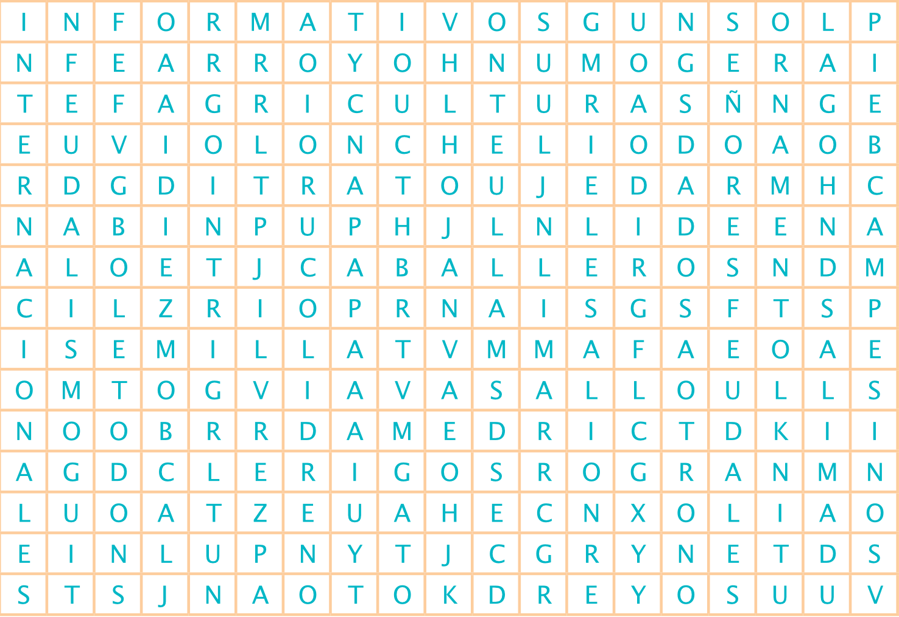
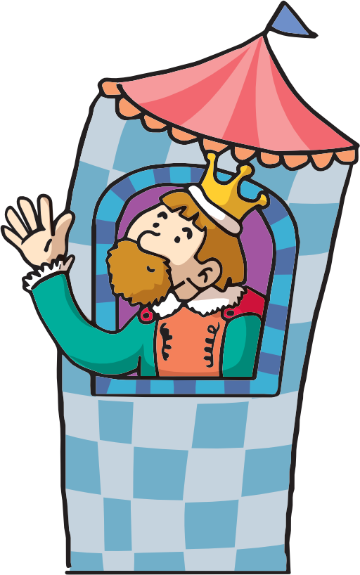

Formamos reinos
La vida en Europa durante la Edad Media
Contesta lo siguiente. Después, encuentra las respuestas en la sopa de letras. Consulta las páginas 87 a 91 de tu libro de texto SEP.
{{i.t}}

